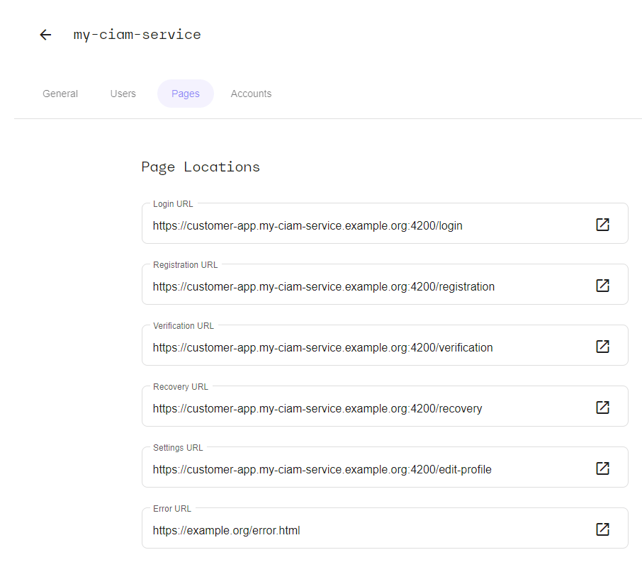
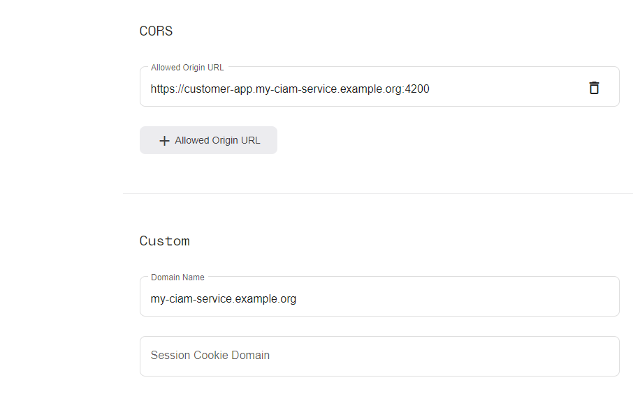

Integration of a sorbay_ciam service
This guide will show you how to integrate your service into sorbay_ciam using our demo ui application.
Let's assume that your domain name is "example.com" and you have already created a service with the name "my-ciam-service".
Configure the sorbay_ciam service
Navigate to the "Settings" of your service, then go to the "Pages" tab.
Configure the "Page Locations" section as follows:

Now scroll down, until you reach the "CORS" and "Custom" sections. Enter the values according to the following illustration.

You will have to create a CNAME record with the DNS provider with which the domain is registered, with the value that's provided in this view.
Self-Service flows such as Login, Registration, Updating Settings support two successful response modes:
- For browsers of a server-side application, identified by the
Accept: text/html header, the response will be a redirection. - For API clients, such as a client-side AJAX application, identified by the
Accept: application/json header, the response will be in JSON.
The browser redirects work just for regular browser requests. If you are using an API Client, as mentioned above, the application must redirect the user to the right endpoint in the application. Since our pre-built demo ui container is a client-side application, it is required to provide the locations by means of environmental variables.
Run the Docker Demo UI
You can test the sorbay_ciam service with our pre-built demo ui container.
In order to run the container, it must be configured as follows.
Mandatory configuration:
* Define the name for the container <container-name>
* Define the environment variable for the host name for the web server <your-service>.<your-domain>
* Define the environment variable for the API URI <your-domain>
* Map the container port to the host <host-port>
* Mount the server certificate for SSL into the container <absolute-path-to-certificate>
* Mount the server private key for SSL into the container <absolute-path-to-private-key>
* Specify the image version <version>
Optional configuration, to be provided as environment variables (e.g. -e LOGIN_URI="
To run the container use the following command:
docker run --rm --name <container-name> -e HOST_NAME="<your-service>.<your-domain>" -e API_URI="<your-domain>" -p <host-port>:8443 -v <absolute-path-to-certificate>:/etc/nginx/certs/ssl.crt -v <absolute-path-to-private-key>:/etc/nginx/certs/ssl.key quay.io/usp/sorbay-ciam-self-service:<version>
This is a concrete example according to the settings above. Ensure you provide the server certificate and private key for the demo application.
docker run --rm --name sorbay_ciam_demo -e HOST_NAME="customer-app.my-ciam-service.example.org" -v /location/to/my-ciam-service.key:/etc/nginx/certs/ssl.key -v /location/to/my-ciam-service.crt:/etc/nginx/certs/ssl.crt -e API_URI="https://my-ciam-service.example.org" -p 4200:8443 quay.io/usp/sorbay-ciam-self-service:1.0.0